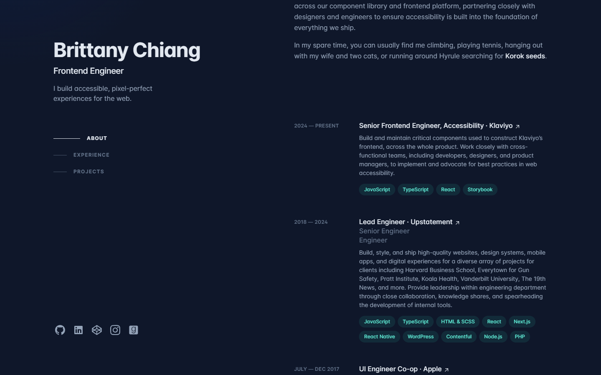
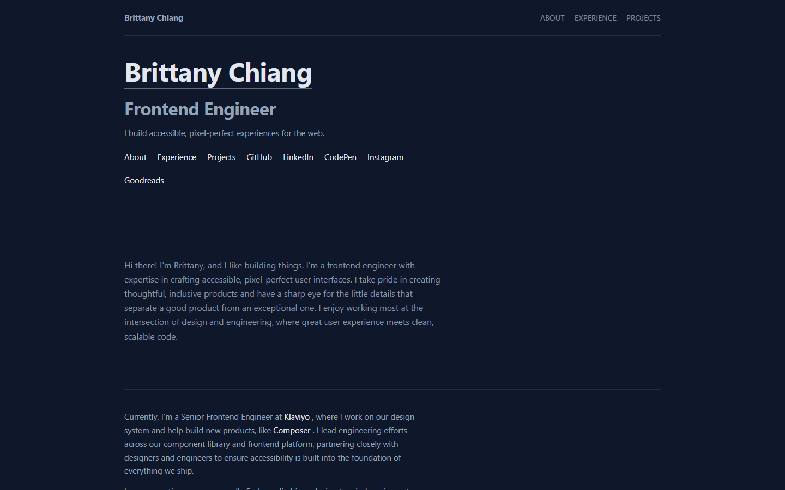

A page rebuilt from a live site, then graded against the original
One command reads a live website, re-derives its content and design tokens, and
emits a self-contained static site. The output is then measured against the original with hard
numbers — content recall, image coverage, overflow, link targets — instead of an opinion.
Source and rebuild

Original — captured from the live site at 1440×900

Rebuild — generated, self-contained static page
100%content recall
15 / 0 / 0checks pass / warn / fail
8 / 8distinct images placed
38.9swall time, one command
Measured on this machine, start to finish, including downloading every asset and grading the
result in a real browser. Times vary with asset download size — this one is a single-page site.
What the rebuild changes
Output is semantic HTML plus one generated stylesheet — no framework, no build step.
Palette, typeface and base size are read from the source, not invented.
Layout is responsive by construction: fluid type, collapsing grids, contained overflow.
Every asset is copied locally, so the page runs with no server.
Result is reproducible — re-running on the same input returns a byte-identical page.
What it does not do
It rebuilds the entry page only. Linked sub-pages are kept as links, not rebuilt.
The design is re-derived, not pixel-copied. A pixel copy of a broken site is still broken.
Section intent (gallery vs logo strip) is inferred and worth a human glance.
Roughly five minutes of visual review per site — three defects in this build were only
visible by looking, not from the numbers.